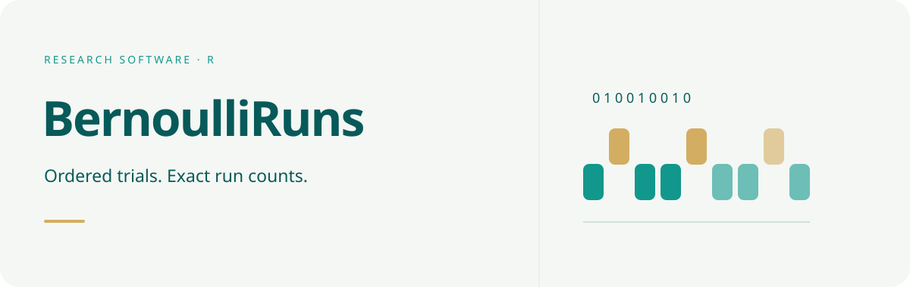

Documentation · Get started · Reference

Conceptual sequence illustration; colours distinguish zero and one, not fitted probabilities.

BernoulliRuns computes the exact distribution of the total number of runs in a non-empty sequence of mutually independent Bernoulli trials. Success probabilities may vary by position and are supplied by the user.
The first public API contains four functions:
-
count_runs()counts maximal equal-value blocks in an observed binary sequence. -
runs_distribution()returns exact probability mass and cumulative probabilities. -
runs_mean()returns the exact expected run count. -
runs_tail()returns an inclusive lower or upper one-sided tail probability.
Example
library(BernoulliRuns)
prob <- c(0.15, 0.40, 0.75, 0.60)
runs_distribution(prob)
runs_mean(prob)
runs_tail(c(0, 1, 1, 0), prob, tail = "upper")Scientific boundary
The package treats the supplied probabilities as fixed and assumes mutual independence. It does not estimate probabilities, model dependent or Markov sequences, calculate longest-run distributions, or define a two-sided p-value. If probabilities were estimated from the same observations, the reported tail probability is not automatically a calibrated exact test.
The finite-state formulation follows Fu and Koutras (1994), https://doi.org/10.1080/01621459.1994.10476841.
Local installation
Install the development version from GitHub with:
# install.packages("remotes")
remotes::install_github("byuzbasi/BernoulliRuns")From the package’s parent directory:
The source is licensed under GPL version 3 or later.